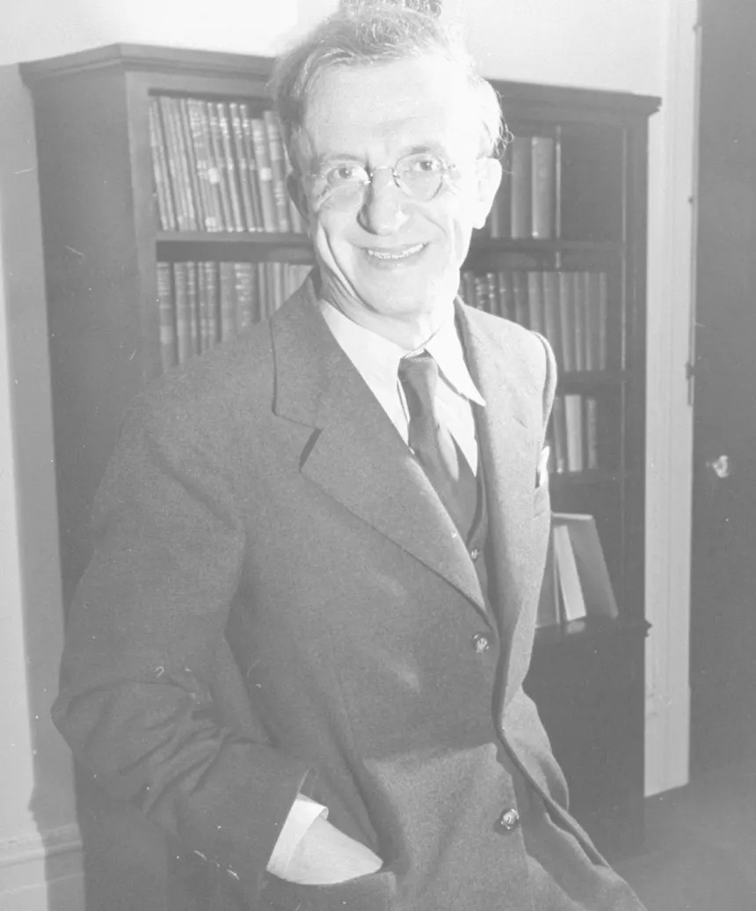
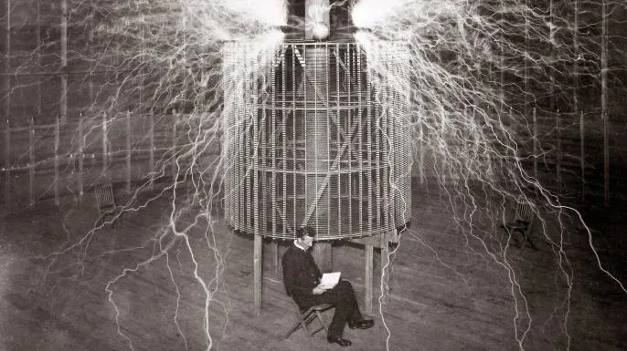

The Mystery of Nikola Tesla’s Missing Files
The FBI has finally declassified its files on Nikola Tesla, but questions remain.
After Nikola Tesla was found dead in January 1943 in his hotel room in New York City, representatives of the U.S. government’s Office of Alien Property seized many documents relating to the brilliant and prolific 86-year-old inventor’s work
It was the height of World War II, and Tesla had claimed to have invented a powerful particle-beam weapon, known as the “Death Ray,” that could have proved invaluable in the ongoing conflict. So rather than risk Tesla’s technology falling into the hands of America’s enemies, the government swooped in and took possession of all the property and documents from his room at the New Yorker Hotel.
What happened to Tesla’s files from there, as well as what exactly was in those files, remains shrouded in mystery—and ripe for conspiracy theories. After years of fielding questions about possible cover-ups, the FBI finally declassified some 250 pages of Tesla-related documents under the Freedom of Information Act in 2016. The bureau followed up with two additional releases, the latest in March 2018. But even with the publication of these documents, many questions still remain unanswered—and some of Tesla’s files are still missing.
Three weeks after the Serbian-American inventor’s death, an electrical engineer from the Massachusetts Institute of Technology (MIT) was tasked with evaluating his papers to determine whether they contained “any ideas of significant value.” According to the declassified files, Dr. John G. Trump reported that his analysis showed Tesla’s efforts to be “primarily of a speculative, philosophical and promotional character” and said the papers did “not include new sound, workable principles or methods for realizing such results.”

John Trump, head of research at MIT, in high voltage research lab of MIT, 1949. (Credit: Alfred Eisenstaedt/The LIFE Picture Collection/Getty Images)
The scientist’s name undoubtedly rings a bell, as John G. Trump was the uncle of the 45th U.S. president, Donald J. Trump. The younger brother of Trump’s father, Fred, he helped design X-ray machines that greatly helped cancer patients and worked on radar research for the Allies during World War II. Donald Trump himself cited his uncle’s credentials often during his presidential campaign. “My uncle used to tell me about nuclear before nuclear was nuclear,” he once told an interviewer.
At the time, the FBI pointed to Dr. Trump’s report as evidence that Tesla’s vaunted “Death Ray” particle beam weapon didn’t exist, outside of rumors and speculation. But in fact, the U.S. government itself was split in its response to Tesla’s technology. Marc Seifer, author of the biography Wizard: The Life & Times of Nikola Tesla, says a group of military personnel at Wright Patterson Air Force Base in Dayton, Ohio, including Brigadier General L.C. Craigee, had a very different opinion of Tesla’s ideas.
“Craigee was the first person to ever fly a jet plane for the military, so he was like the John Glenn of the day,” Seifer says. “He said, ‘there’s something to this—the particle beam weapon is real.’ So you have two different groups, one group dismissing Tesla’s invention, and another group saying there’s really something to it.”
Then there’s the nagging question of the missing files. When Tesla died, his estate was to go to his nephew, Sava Kosanovic, who at the time was the Yugoslav ambassador to the U.S. (thanks to his familial connection with Serbia’s most celebrated inventor). According to the recently declassified documents, some in the FBI feared Kosanovic was trying to wrest control of Tesla’s technology in order to “make such information available to the enemy,” and even considered arresting him to prevent this.
Yugoslavan Ambassador Sava N. Kosanovic in his study. (Credit: George Skadding/The LIFE Picture Collection/Getty Images)
In 1952, after a U.S. court declared Kosanovic the rightful heir to his uncle’s estate, Tesla’s files and other materials were sent to Belgrade, Serbia, where they now reside in the Nikola Tesla Museum there. But while the FBI originally recorded some 80 trunks among Tesla’s effects, only 60 arrived in Belgrade, Seifer says. “Maybe they packed the 80 into 60, but there is the possibility that…the government did keep the missing trunks.”
For the five-part HISTORY series The Tesla Files, Seifer joined forces with Dr. Travis Taylor, an astrophysicist, and Jason Stapleton, an investigative reporter, to search for these missing files and seek out the truth of the government’s views on the “Death Ray” particle-beam weapon and Tesla’s other ideas.
Despite John G. Trump’s dismissive assessment of Tesla’s ideas immediately after his death, the military did try and incorporate particle-beam weaponry in the decades following World War II, Seifer says. Notably, the inspiration of the “Death Ray” fueled Ronald Reagan’s Strategic Defense Initiative, or “Star Wars” program, in the 1980s. If the government is still using Tesla’s ideas to power its technology, Seifer explains, that could explain why some files related to the inventor still remain classified.
Then there’s the nagging question of the missing files. When Tesla died, his estate was to go to his nephew, Sava Kosanovic, who at the time was the Yugoslav ambassador to the U.S. (thanks to his familial connection with Serbia’s most celebrated inventor). According to the recently declassified documents, some in the FBI feared Kosanovic was trying to wrest control of Tesla’s technology in order to “make such information available to the enemy,” and even considered arresting him to prevent this.
Nilkola Tesla sitting in his Colorado Spring laboratory. (Credit: Stefano Bianchetti/Corbis via Getty Images)
There is evidence that Franklin D. Roosevelt’s vice president, Henry Wallace, discussed “the effects of TESLA, particularly those dealing with the wireless transmission of electrical energy and the ‘death ray’” with his advisors, according to FBI documents released in 2016. Along the same lines, Seifer and his colleagues in The Tesla Files uncovered the role played by Vannevar Bush, whom FDR appointed as head of the Manhattan Project, in the evaluation of Tesla’s papers. They also looked at the possibility that FDR himself may have sought a meeting with the inventor just before he died.
By visiting some of the key places in Tesla’s life—from his laboratory in Colorado Springs to his last living quarters at the Hotel New Yorker to the mysterious wireless tower he built at Wardenclyffe, Long Island—Seifer, Taylor and Stapleton sought to unravel some of the mysteries surrounding the celebrated, enigmatic inventor. They also traveled to California, where some of Tesla’s other groundbreaking ideas —many of which were seen as unrealistic or even crackpot during his own lifetime—now fuel some of the most dominant industries in Silicon Valley.
Although some of his more sensitive innovations may still be hidden, Tesla’s legacy is alive and well, both in the devices we use every day, and the technologies that will undoubtedly play a role in our future. “Tesla is the inventor of wireless technology. He’s the inventor of the ability to create an unlimited number of wireless channels,” Seifer says of the inventor’s lasting impact. “So radio guidance systems, encryption, remote control robots—it’s all based on Tesla’s technology.”
.INVENTORS